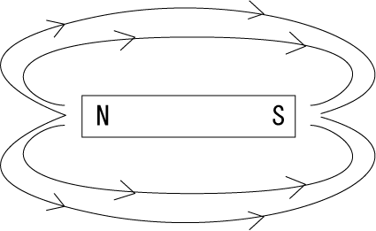
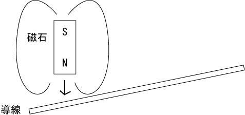
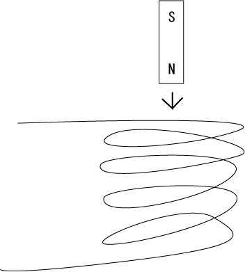
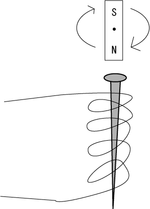
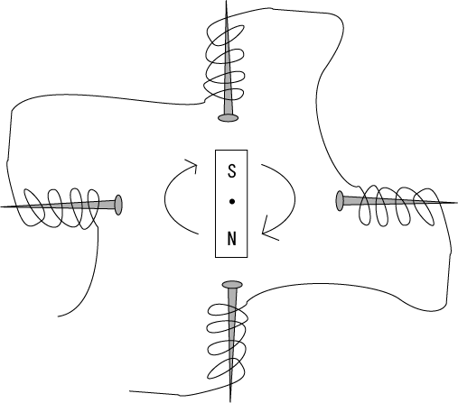

発電機の世界観です。
電流の流れ方には、直流と交流がある。
たとえば、水流の場合。水は、上から下へと一方向に流れる。これは電池も同じで、電流は+から-へと一方向に流れる（電子の流れは-から+だが、電流の流れは+から-）。
これは、川が上流から下流へと一方向に流れるのと同じ。
このように、流れが一方向の電流の流れのことを、直流（DC）という。電池の場合は直流である。
これに対して、海の寄せては返す波のように、「行ったり来たりを繰り返す電流の流れ」がある。これを交流（AC）と呼ぶ。そして、原理上、発電機は交流であり、家庭に届けられる電気も交流である。
家庭に届く電気は交流だが、パソコンなど電気機械の多くは直流で動いている。このため、ACアダプターと呼ばれる、ACの電流をDCに変換する装置が必要となることがある。
発電機の仕組みを考えるためには、電磁誘導を考えなければならない。
電磁誘導とは、電流から磁界を発生させたり、磁界から電流を発生させることのできる現象のこと。
磁石の周りの空間には、以下のような目に見えない磁界が発生する。

磁界を表現したこのような図（モデル）の中で、周りの線のことを磁力線と言う。
磁石にはN極とS極があり、同じ極同士は反発し、違う曲同士は引き合うという性質がある。
また、地球も巨大な磁石であり、地球の周りには磁界がある。コンパス（羅針盤）を使うことで、北と南がどの方角なのかを知ることができる。
また、磁石に鉄の釘のような鉄でできたものをくっつけると、釘は磁石の性質を持つ。鉄が磁界の流れを通し、磁石の性質を働かせるようになるのである。鉄の釘のように、磁石の性質を持った物質を「磁性体」と呼ぶ。
次に、導線に対して以下のように磁石を近づけて、導線の周囲の磁界の強さを変化させてみる。

このようにすると、なんと導線に電流が流れる。これを電磁誘導と言う。
電磁誘導とは、「導線の周囲の磁界の強さが変化すると、導線に電流が発生する」というものである。
電磁誘導に関して、「フレミングの法則」と呼ばれる法則がある。フレミングの法則は、よく知られている「左手の法則」と「右手の法則」がある。
| 法則 | 意味 |
|---|---|
| 左手の法則 | 磁界によって電流を生み出す時の法則。 磁界と導線が直角であった時、それぞれ直角に指した左手の中指が電流(I)、人差し指が磁力(B)、親指が力(f)の方向となる。 それぞれの頭を取って「電磁力」と覚える。 |
| 右手の法則 | コイルに発生する起電力（たとえばモーター）の法則。 右手の中指が電流、人差し指が磁力、親指が力の方向となる。右手と左手が違うだけで指は同じ。 |
この法則を用いて、導線に磁石を近づけたり離したりすることで、発電機を作ることができる。この「近づけたり離したり」という動作が繰り返し行われることが、発電機が交流になった理由である。
さて、このように電磁誘導が理解できたところで、電力を連続させて、大きく使うためにはどうするか。
まず、以下のように、導線をくるくると巻いて、その中に磁石を入れたり出したりする仕組みを考えた。この時、導線をくるくると巻いたものをコイルと呼ぶ。

このようにすることで、磁界の強さがたくさんの導線で一度に変えられ、電流が大きく流れるし、入れたり出したりすることで連続して電流を発生させられる。
しかしながら、「入れたり出したり」といった方式は少し面倒であり、手間がかかる。
そして、磁性体の周りにコイルを巻いて、磁石を回転させる仕組みを考えた。

これなら、回転させるだけで、たくさんの電力を発生させることができる。
実際の発電機では、磁石の周りにたくさんのコイルをつけ、磁石を中心で回転させるなどして、より効率的に発電を行うようになっている。

発電機を発明したのはエジソン（GE社）だが、当時はシーメンス社など同じように発電機を発明しようとする多くの発明家や会社があった。
ちなみに、日本では、関東と関西で別々の会社から発電システムを輸入したため、東日本と西日本で50Hzと60Hzの違いが生まれてしまった。東京はドイツから50Hzの発電機を、大阪はアメリカから60Hzの発電機を輸入した。
考えてみれば、電線が一本通っているだけで、家庭の全ての電気を必要とする機械が動くというのは、とても不思議なことである。
発電所で発電された電気は、電線と変電所を通って家庭にもたらされる。
発電所から変電所までの電線を「送電線」、変電所から家庭までの電線を「配電線」と呼ぶ。
発電所から送られた電気は、そのままでは電圧が高すぎて家庭で使うことはできない。変電所で100ボルトに電圧を変電し、家庭の普通の機械で使える電気にする。
家庭に送られてきた電気は、家庭内の機械を通して、力エネルギー、熱エネルギー、あるいは光エネルギーなどに変換される。
電線が一本通っているだけで電気が使える、というのは画期的だが、途中の電線が災害で切れたり電柱が倒れたりするするなど、送電・配電に問題がでた時は、その一帯の地域が「停電」し、電気が使えなくなる。
このため、電力会社はインフラが滞らないように、別の備えとなるシステムを使って電線を復旧したり、電柱が倒れればそれを直しにいくなどする。
後日注記：千葉県などでは台風により多くの地域が停電になり、スマホなども繋がらないため「どうやって情報を得れば良いのか分からない」事態が起きた。電気エネルギーに依存しすぎるのも考え物である。
最近では、太陽光パネルやリチウムイオン電池の技術の向上によって、家庭内でも電気を溜めやすい環境が整ってきた。
ソーラー発電システムによって日中の間太陽光パネルで発電された電気は、家庭内でリチウムイオン電池に蓄えられ、これを昼夜や天候に関わらず、家庭で使う電気として使ったり、電力会社に買い取ってもらうことができる。
昔に比べてソーラー発電パネルや電気を溜めるリチウムイオン電池の性能向上や価格の低下が行われたこともあり、最近では太陽光パネルを屋根につける家が増えている。一部のベンチャー企業などでは「屋根だけではなく壁の側面にもつける」といった技術革新が行われている。
「晴れている日は良いけれど雨の日はどうなるのか」と思う方が居るかもしれないが、リチウムイオン電池に充電されるため、蓄電された電気をいつも使うことができる。
ただし、リチウムイオン電池はスマホなどのバッテリーにも使われているが、エネルギーのたくさん入った機器は取扱いに注意が必要で、韓国や中国の企業のスマホなどを使うと、以前「高熱になって火が出る」という事件があった。たくさんのエネルギーの入った電池は、放熱や加熱のリスクも高く、火が出たり爆発したりすることがある。
後日注記：ソーラー発電の問題は技術よりも制度であり、「せっかく作った電力を国や電力会社が買い取ってくれない」という現実がある。どのように投資したコストを回収するかという「経済的な側面」が大きな課題となっている。
火力発電所では、蒸気機関と同様の水蒸気のエネルギーを用いて発電を行っています。石油で水を熱して、水蒸気にしたエネルギーでタービンを回し、電力を作ります。
水力発電所では、ダムの高い位置にある水を流れ落とすことで、巨大なエネルギーを発生させます。この時、水は「位置エネルギー」を持っています。
地熱発電所では、マグマの熱を利用して発電を行います。
なぜ、エネルギーを電気エネルギーにするのかと言うと、電線を用いて家庭に配電できるからです。電気エネルギーを発生させることで、電力を用いて家電製品を使うことができます。これによって、人類の生活は飛躍的に向上しました。
良く、電気自動車などのことを、「石油ではなくクリーンな電気だから環境に優しい」と勘違いしている人が居ますが、火力発電所などでも石油をたくさん燃やしているため、これは正しくありません。ですが、原子力発電や再生可能エネルギーを、「これから普及していく発電技術」と捉えて考慮すれば、ある意味でそうした可能性もある、と言えるかもしれません。
僕は、太陽光発電の設置拡大に、温暖化解決の道を模索しています。まず、国が無料で、太陽光発電システムを各家庭に配備させます。作った電気は、家庭が使えます。ただし、配備するためにかかった費用の分だけ、電気量を取るようにします。それで、きちんと温暖化を解決するために、全国への太陽光発電システムを整備出来ます。ただ、このビジネスモデルは、失敗する可能性があるので、少ない自治体からやるようにします。このように投資システムにしなくても、ある程度所得の多い家庭に設置を義務づけることは、出来るかもしれません。あるいは、育ちやすい植物を遺伝子改良で作る、と言う方法もあるでしょう。